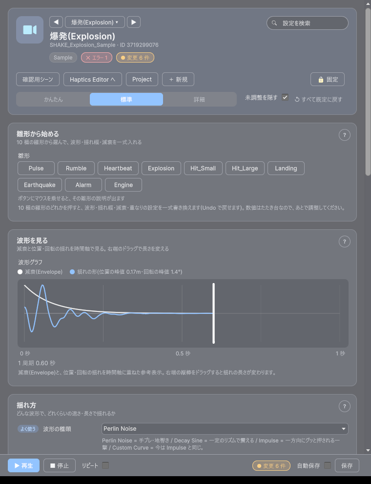
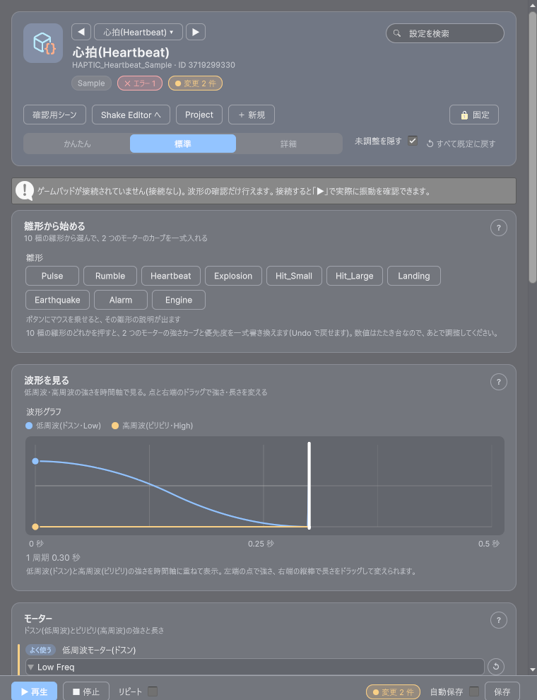

最終更新日: 2026-10-13
攻撃が当たった・爆発が起きた、といった「手応え」を出す 2 つの仕組みです。どちらも ID(番号札)で管理するデータで、演出(Presentation) の中の 1 トラックとして使うことも、プログラム側から直接鳴らすこともできます。
Tools > D-Drive > Editors > Shake / Haptics(または Asset Browser でデータを開く)から、波形を見ながらの調整・「実際にカメラを揺らす」「パッドを実際に振動させて試す」・雛形 10 種からの適用ができます。使い方は下の「Shake Editor / Haptics Editor の使い方」を参照してください。
対象のデータを選んでいない（空の）ときは、ウィンドウの「サンプルを作る」ボタンでサンプルのデータを作って試せます（Assets/GameData/<種別>/Sample/ にカテゴリ Sample で作られます。同じものが既にあれば、作らずそれを選びます）。
| 項目 | 説明 |
|---|---|
| Pattern(波形) | Perlin Noise: 手ブレ・地響きのようなランダムな揺れ(既定)。Decay Sine: 一定のリズムで震える揺れ。Impulse: 振動せず、一方向に「グッ」と押される一撃。Custom Curve: 今のところ Impulse と同じ動きです |
| Pos Amplitude(位置の揺れ幅) | 上下・左右・前後にどれだけ動くか(メートル)。X/Y/Z を別々に設定できます |
| Rot Amplitude(回転の揺れ幅) | どれだけ傾く・回るか(度)。Z だけ入れると「首をかしげる」ような揺れになります |
| Frequency(周波数) | Perlin Noise / Decay Sine で使う、揺れの速さ(Hz)。数字が大きいほど細かく速く揺れます |
| Envelope(減衰) | 揺れの強さが時間とともにどう弱まっていくか。既定は 0.3 秒でスッと収まる設定。用語集にもある「形+速さ」の共通の編集項目(ValueDef)で調整します |
| Space(基準の向き) | Camera Local(既定): カメラ自身の向きを基準に揺れる。World: カメラの向きに関係なく、いつも同じ方向に揺れる。From Source: 発生位置(爆発の場所など)からカメラへ向かって「奥から手前に押される」揺れになる |
| Trauma Weight(合成の重み) | 複数のシェイクが同時に起きたときの寄与度。既定 1。大きくすると、他のシェイクと重なったときにより強く効きます |
| Max Stack(同時再生数の上限) | 同じシェイクが同時に何個まで積み重なれるか。既定 3。これを超えて呼ばれた分は静かに無視されます(連打しても壊れないための安全弁) |
| 項目 | 説明 |
|---|---|
| Low Freq(低周波モーター) | 「ドスン」という低い振動。強さが時間とともにどう変わるかを ValueDef(形+速さ)で決める。既定は 0.2 秒で収まる設定 |
| High Freq(高周波モーター) | 「ビリビリ」という高い振動。Low Freq と同じ形式 |
| Priority(優先度) | 今のところ参考情報のみ(下記「複数の振動が重なったら」を参照) |
| Local Player Only | 自分に起きた事象のときだけ振動させるか(既定 ON)。マルチプレイ対応前の現状は常にこの動きです |
| Extensions(拡張) | DualSense のアダプティブトリガー等、機種別の特殊な振動。まだ未対応で、設定しても警告が出るだけです |
デザイナーが直接書く場面は少ないですが、演出(Presentation)を経由しない単発の揺れ・振動はプログラム側がこう書きます。CameraFx.Shake(シェイクの ID) / Haptics.Play(振動の ID)。中身の調整はこのページの手順のとおり、データ側だけで完結します。
演出のページにあるとおり、Tracks の Kind に Camera Shake / Haptic を選び、Asset 欄にこのページで作ったデータの ID を入れるだけで、他の SE・VFX と同じタイミングで揺れ・振動が鳴らせます。剣攻撃デモ(PresentationSkillSlashPreviewScene)では、当たった合図(hit)で画面停止(ヒットストップ)・SE と同時に、画面が揺れてパッドが振動するようになっています。
設定画面の「画面揺れ」「振動」のスライダー(0〜100%)は、コード不要でこの仕組みに直結しています。0% にすると完全に揺れ・振動が止まります(酔いやすい人・振動が苦手な人向けのアクセシビリティ対応)。詳しくは UI Tween のページの標準オプションの節を参照してください。
スライダーの見た目(Skin)にある「Notch Haptic Id」「Limit Haptic Id」にこのページで作った振動データの ID を入れると、目盛りを越えた・端に当たったときにパッドが振動します(2026-09-14 から対応)。
| 警告 | 意味と直し方 |
|---|---|
| PosAmplitude / RotAmplitude が両方ゼロです | このままでは何も揺れません。どちらかに値を入れてください |
| PosAmplitude / RotAmplitude が大きすぎる可能性があります(酔いのリスク) | 揺れが強すぎるとプレイヤーが酔いやすくなります。数値を小さくするか、本当に必要な演出か見直してください |
| MaxStack が 0 以下です | このままでは Shake() を呼んでも常に無視されます。1 以上にしてください |
| TraumaWeight が 0 以下です | このままでは合成に一切寄与しません(揺れません)。1 前後にしてください |
| 振動の尺が 2 秒を超えています | 長すぎる振動は不快に感じやすいです。短くすることを検討してください |
| Extensions は未実装です | プラットフォーム別の特殊な振動はまだ使えません。基本の 2 モーターカーブだけで表現してください |
Tools > D-Drive > Editors > Shake / Haptics、または Asset Browser・Inspector の「Shake Editor で開く」「Haptics Editor で開く」から開きます。カメラの揺れは Shake Editor、パッドの振動は Haptics Editor の別ウィンドウで、上部の「Haptics Editor へ」「Shake Editor へ」のボタンで行き来できます(Project ウィンドウで選んだデータにも自動で追従します。まだデータが無ければ「＋ 新規」から作れます。Asset Browser の使い方参照)。
どちらも、やりたいことごとの「カード」に設定が並びます。上の「かんたん / 標準 / 詳細」で表示する欄の量を切り替え、右上の検索で設定を探せます。ウィンドウ下の固定バーに ▶ 再生・■ 停止・リピート・変更件数・自動保存・保存があります。

Pulse(軽い一撃) / Rumble(持続する揺れ) / Heartbeat(心拍のような二拍) / Explosion(爆発) / Hit_Small・Hit_Large(被弾小・大) / Landing(着地) / Earthquake(地震・持続) / Alarm(警報・持続) / Engine(エンジンのアイドリング・持続)の 10 種。ボタン 1 つで波形・揺れ幅・減衰・重なりの設定を一式書き換えます(Undo で元に戻せます)。マウスを乗せると説明が出ます。数値はたたき台なので、実際のプレイ感に合わせて調整してください。
減衰(Envelope)と、位置・回転の揺れの形を時間軸に重ねて表示します(位置と回転は同じ形で、大きさだけ違うので 1 本です。凡例に最大の振れ幅が出ます)。数値の欄を変えると描き直されます。右端の縦棒をドラッグすると揺れの長さ(Envelope の尺)が変わります(Shift で 0.25 秒刻み)。尺が Speed / Rate で決まっているデータではドラッグできません。あくまで参考表示で、実際の揺れ方(ランダムな位相のずれ等)を完全に再現するものではありません。
各欄の意味は上の「カメラシェイクの設定項目」の表と同じです。設定に問題がある欄(揺れ幅がゼロ・大きすぎる・尺が 0 など)は、その欄の下に警告が出ます。

Shake と同じ 10 種の雛形を、2 つのモーターのカーブと優先度として一式書き換えます(Undo で戻せます)。
低周波(ドスン)と高周波(ビリビリ)の強さを時間軸に重ねて表示します。左端の点をドラッグすると、そのモーターの強さ(固定値、または始まりの値)が、右端の縦棒をドラッグすると振動の長さ(両方のモーターを同じ比率で)が変わります(Shift で刻みが粗くなります)。カーブ(AnimationCurve)で指定した強さは、点ではなく下の欄で編集します。
表示名・カテゴリ・説明・タグ・担当者・仕様書 URL など、一覧での見え方とメモ。詳細モードでは動作の取り決め(Flags)・イベント(Events)も出ます。